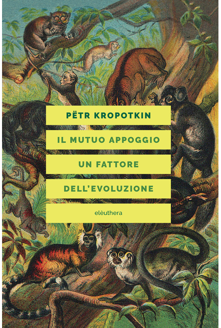

16:15 · 4 OPERE
Bene individuale vs bene collettivo
Il filo del discorso
Il rapporto fra bene individuale e bene collettivo è affrontato attraverso una critica delle promesse politiche e della riduzione della società a interessi in competizione. Dr Divago richiama Platone e Il mutuo appoggio di Kropotkin per discutere cooperazione, formazione e vita comune. La parte centrale distingue società e comunità, interroga la tolleranza repressiva e torna alla polis e alla res publica. Il finale sostiene che il problema del potere riguarda il modo di vivere insieme e la responsabilità per un destino condiviso, entro i limiti dell’esistenza umana.
I libri nel discorso

La Repubblica
Note sul riferimento
Copertina: Laterza · La Repubblica · edizione con testo a fronte di riferimento
Immagine associata all’ISBN di riferimento e controllata visivamente; edizione e traduzione non identificate come quelle citate o lette nel video.
È nominata la Politeia nella discussione della comunità politica.

Il mutuo appoggio. Un fattore dell’evoluzione
Note sul riferimento
Copertina: Elèuthera · 2020
Copertina autentica di riferimento, controllata visivamente. L’edizione non è identificata come quella usata nel video.
Il mutuo appoggio e Kropotkin sono nominati con il riferimento al 1902.
La tolleranza repressiva
Identificazione probabile
Note sul riferimento
Copertina: Mimesis · Minima / Volti · 2011 · Critica della tolleranza
Copertina dell’edizione italiana del saggio intitolata Critica della tolleranza, firmata dal solo Marcuse. Non è la raccolta Einaudi dei tre autori; nessuna edizione è attribuita al video.
La formula tolleranza repressiva è collegata probabilmente al saggio di Marcuse; può indicare il concetto.

La società aperta e i suoi nemici
Identificazione probabile
Note sul riferimento
Copertina: Armando Editore · Classici · 2018 · volume unico
Copertina autentica di riferimento, controllata visivamente. L’edizione non è identificata come quella usata nel video.
Popper, società aperta e falsi profeti richiamano probabilmente il suo saggio.